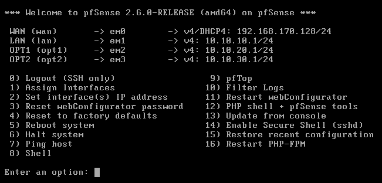

<!-- Example stored under docs/. Remove ../ from href and src when copying into the root README. -->
<details>
<summary>LAB-001 — Network foundation · detailed evidence</summary>

<!-- In a README at the repository root, use evidence/... paths. -->

<p><a href="../tickets/001-network-foundation.md">Implementation ticket</a></p>
<p><a href="../evidence/001-network-foundation/README.md">Evidence notes and captions</a></p>

<details>
<summary>Interface configuration screenshot</summary>



</details>

</details>
